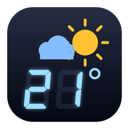
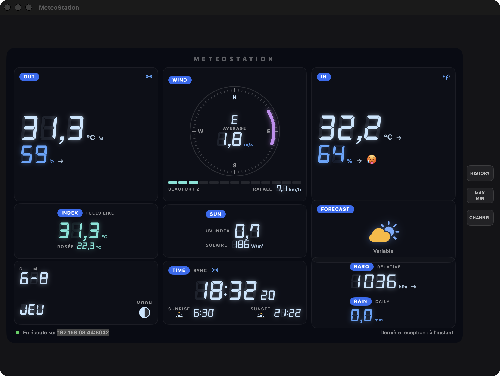

MeteoStation mirrors a Bresser Weather Center 7-in-1 console — the station pushes every reading straight to your Mac every ~5 seconds, over your own WiFi. No account, no cloud, no polling. MeteoStation reproduit la console d'une Bresser Weather Center 7-in-1 — la station pousse chaque mesure directement vers votre Mac toutes les ~5 secondes, via votre propre WiFi. Sans compte, sans cloud. MeteoStation 复刻 Bresser Weather Center 7-in-1 控制台——气象站每约 5 秒通过您自己的 WiFi 将读数直接推送到 Mac。无账户、无云端、无轮询。
macOS 14+ · Developer ID signed & notarized · Sparkle 2 updates · MIT license macOS 14+ · Signée Developer ID & notariée · Mises à jour Sparkle 2 · Licence MIT macOS 14+ · Developer ID 签名并经公证 · Sparkle 2 更新 · MIT 许可证

The app embeds a tiny HTTP server; the console pushes Weather Underground frames to it every ~5 seconds. The app is the weather server.L'app embarque un mini serveur HTTP ; la console y pousse ses trames Weather Underground toutes les ~5 secondes. L'app est le serveur météo.应用内置微型 HTTP 服务器；控制台每约 5 秒推送一次 Weather Underground 数据帧。应用本身就是气象服务器。
True 3×3 layout, DSEG 7-segment digits with ghost segments, wind compass, Beaufort scale, pressure graph, trend arrows, comfort smiley.Grille 3×3 fidèle, chiffres 7 segments DSEG avec segments fantômes, boussole de vent, échelle de Beaufort, graphe de pression, flèches de tendance, smiley de confort.忠实的 3×3 布局、DSEG 七段数码字体、风向罗盘、蒲福风级、气压曲线、趋势箭头、舒适度表情。
Outdoor & indoor temperature and humidity, dew point, feels-like, wind, gusts, rain, UV index, solar radiation, relative pressure.Températures et humidités extérieure/intérieure, point de rosée, ressenti, vent, rafales, pluie, indice UV, rayonnement solaire, pression relative.室外/室内温湿度、露点、体感温度、风速、阵风、降雨、UV 指数、太阳辐射、相对气压。
Sunrise/sunset computed locally (NOAA algorithm), moon phase, clock with seconds — no network lookup needed.Lever/coucher du soleil calculés localement (algorithme NOAA), phase de lune, horloge avec secondes — aucun accès réseau nécessaire.本地计算日出日落（NOAA 算法）、月相、带秒时钟——无需联网查询。
Everything stays on your LAN. Sandboxed app, 7-day local history, no account, no analytics, open source.Tout reste sur votre réseau local. App sandboxée, historique local de 7 jours, pas de compte, zéro télémétrie, open source.一切数据保留在局域网内。沙盒应用、7 天本地历史、无账户、无遥测、开源。
Sparkle 2 + notarized DMGs + EdDSA signatures — Check for Updates… downloads, swaps and relaunches.Sparkle 2 + DMG notariés + signatures EdDSA — Rechercher les mises à jour… télécharge, remplace et relance.Sparkle 2 + 已公证 DMG + EdDSA 签名——检查更新即可下载、替换并重启。
Grab the latest signed .dmg from GitHub Releases and drop MeteoStation into /Applications.Récupérez le dernier .dmg signé depuis GitHub Releases et déposez MeteoStation dans /Applications.从 GitHub Releases 获取最新签名的 .dmg，并将 MeteoStation 拖入 /Applications。
The status bar shows the exact address your station must push to, e.g. 192.168.1.50:8642.La barre de statut affiche l'adresse exacte vers laquelle la station doit pousser, ex. 192.168.1.50:8642.状态栏会显示气象站需要推送到的确切地址，如 192.168.1.50:8642。
Put the console in AP mode, open its web UI and enter that address in the free-URL weather service. Full guide in the repo.Passez la console en mode AP, ouvrez son interface web et saisissez cette adresse dans le service météo à URL libre. Guide complet dans le repo.将控制台切换到 AP 模式，打开其网页界面，在自定义 URL 气象服务中输入该地址。完整指南见仓库。
Unofficial project — not affiliated with Bresser. Works with the Bresser Weather Center 7-in-1 (WSX3001-generation console, the one with the built-in AP-mode web UI). Your station, your LAN, your data. Projet non officiel — sans affiliation avec Bresser. Fonctionne avec la Bresser Weather Center 7-in-1 (console génération WSX3001, celle qui a l'interface web en mode AP). Votre station, votre réseau, vos données. 非官方项目——与 Bresser 无关。适用于 Bresser Weather Center 7-in-1（WSX3001 代控制台，即带 AP 模式网页界面的版本）。您的气象站、您的网络、您的数据。